전기공사산업기사 (2011-03-20 기출문제)
1과목: 전기응용
1. 다음 중 고압수은등의 증기압은 약 얼마인가?
- 10-2[mmHg]
- 1기압
- 10기압
- 100기압
(정답률: 61%)

2. 권상하중 10[t], 매분 24[m/min]의 속도로 물체를 올리는 권상용 전동기의 용량 [kW]은? (단, 전동기를 포함한 기중기의 효율은 65[%]이다.)
- 약 41[kW]
- 약 73[kW]
- 약 60[kW]
- 약 97[kW]
(정답률: 74%)
3. 대기 중에서 합금 발열체보다 약 400[℃] 정도 더 높은 온도에서 사용할 수 있고 저항값이 낮은 것을 얻기 어려운 단점이 있는 발열체는?
- 탄화규소 발열체
- 산화물 발열체
- 순금속 발열체
- 규화 몰리브덴 발열체
(정답률: 71%)
4. 반도체 소자 중 게이트에 부(-)의 신호를 줄 때 소호되는 소자는?
- UJT
- GTO
- TRIAC
- SCR
(정답률: 61%)
5. 적분시간 1[sec], 비례감도가 2인 비례적분 동작을 하는 제어계가 있다. 이 제어계에 동작신호 Z(t)=t를 주었을 때 조작량은? (단, t=0일 때 조작량 y(t)의 값은 0으로 한다.)
- t2 + 2t
- t2 + 4t
- t2 + 5t
- t2 + 6t
(정답률: 71%)
6. 조명기구를 일정한 높이 및 간격으로 배치하여 방 전체의 조도를 균일하게 조명하는 조명방식은?
- 국부조명
- 직접조명
- 전반조명
- 간접조명
(정답률: 66%)
7. 발광 현상에서 복사에 관한 법칙이 아닌 것은?
- 스테판-볼츠만의 법칙
- 빈의 변위 법칙
- 입사각의 코사인 법칙
- 플랑크의 법칙
(정답률: 65%)
8. 완전 확산면의 광속 발산도가 2000[rlx]일 때 휘도는 약 몇 [cd/cm2]인가?
- 0.2
- 0.064
- 0.682
- 637
(정답률: 50%)
9. 양수량 5[m3/min], 총양정 10[m]인 양수용 펌프 전동기의 용량 [kW]은 약 얼마인가?(단, 펌프 효율 ɳ=85%, 설계상 여유계수 K=1.1이다.)
- 9.01
- 10.56
- 16.60
- 17.66
(정답률: 76%)
10. 저항 용접에 속하지 않는 것은?
- 맞대기 저항용접
- 아크용접
- 불꽃용접
- 점용접
(정답률: 69%)
11. 급전선의 급전 분기장치의 설치방식이 아닌 것은?
- 스팬선식
- 암식
- 커티너리식
- 브래킷식
(정답률: 67%)
12. 백열전구의 동정 곡선은 다음 중 어느 것을 결정하는 중요한 요소가 되는가?
- 전류, 광속, 전압, 시간
- 전류, 광속, 효율, 시간
- 광속, 휘도, 전압, 시간
- 광속, 휘도, 효율, 시간
(정답률: 73%)
13. 용량 600[W]의 전기풍로의 전열선의 길이를 5[%] 적게 하면 소비전력은 약 몇 [W]인가?
- 540
- 570
- 630
- 660
(정답률: 55%)
14. 다음 중 고압 아크로와 관계없는 것은?
- 센헬로
- 포오링로
- 페로알로이로
- 비란게란드 아이데로
(정답률: 60%)
15. 전기화학에서 양이온이 되는 것은?
- H2
- SO4
- NO3
- OH
(정답률: 68%)
16. 전기 도금을 계속하여 두꺼운 금속층을 만든 후 원형을 떼어서 그대로 복제하는 방법을 무엇이라 하는가?
- 전기도금
- 전주
- 전해정련
- 전해연마
(정답률: 69%)
17. 반지름이 1500[m]인 곡선궤도를 시속 120[km/h]인 열차가 주행하기 위한 고도[mm]는 약 얼마인가? (단, 궤간은 1435[mm]이다.)
- 25.4
- 51.5
- 84.0
- 108.5
(정답률: 63%)
18. SCR을 역병렬로 접속한 결과 같은 특성의 소자는?
- TRIAC
- GTO
- SCS
- SSS
(정답률: 63%)
19. rate 동작 이라고도 하며 제어 오차가 검출될 때 오차가 변화하는 속도에 비례하여 조작량을 가감하도록 하는 동작은?
- 미분동작
- 비례적분동작
- 적분동작
- 비례동작
(정답률: 56%)
20. 백열전구에서 필라멘트 재료의 구비조건에 대하여 설명한 내용 중 틀린 것은?
- 점화온도에서 주위와 화합하지 않을 것
- 융해점이 높을 것
- 선팽창 계수가 적을 것
- 고유 저항이 적을 것
(정답률: 67%)
2과목: 전력공학
21. 배전선로의 전기방식 중 전선의 중량(전선비용)이 가장 적게 소요되는 전기방식은? (단, 배전전압, 거리, 전력 및 선로손실 등은 같다고 한다.)
- 단상 2선식
- 단상 3선식
- 3상 3선식
- 3상 4선식
(정답률: 40%)
22. 가공 송전선에 사용되는 애자 1연 중 전압부담이 최대인 애자는?
- 철탑에 제일 가까운 애자
- 전선에 제일 가까운 애자
- 중앙에 있는 애자
- 철탑과 애자연 중앙의 그 중간에 있는 애자
(정답률: 51%)
23. 철탑의 탑각 접지저항이 커지면 가장 크게 우려되는 문제점은?
- 역섬락 발생
- 코로나 증가
- 정전 유도
- 차폐각 증가
(정답률: 55%)
24. 200V, 10KVA인 3상 유도전동기가 있다. 어느 날의 부하실적은 1일의 사용전력량 72kWh, 1일의 최대전력이 9kW, 최대부하일 때의 전류가 35A이었다. 1일의 부하율과 최대 공급전력일 때의 역률은 몇 [%] 인가?
- 부하율 : 31.3, 역률 : 74.2
- 부하율 : 33.3, 역률 : 74.2
- 부하율 : 31.3, 역률 : 82.5
- 부하율 : 33.3, 역률 : 82.5
(정답률: 34%)
25. 직접접지방식에 대한 설명 중 옳지 않은 것은?
- 이상전압 발생의 우려가 거의 없다.
- 계통의 절연수준이 낮아지므로 경제적이다.
- 변압기의 단절연이 가능하다.
- 보호계전기가 신속히 작동하므로 과도안정도가 좋다.
(정답률: 32%)
26. 전압 3300/1⑤-0-1⑤[V]의 단상 3선식 변압기에 60A, 60% 및 50A, 80%의 불평형, 늦은 역률 부하를 걸었을 때 총 유효전력은 약 몇 [kW]인가?
- 5
- 8
- 11
- 14
(정답률: 26%)
27. 자가용 변전소의 1차측 차단기의 용량을 결정할 때 가장 밀접한 관계가 있는 것은?
- 부하설비 용량
- 공급측의 전기설비용량
- 부하의 부하율
- 수전계약 용량
(정답률: 37%)
28. 소호각(arcing horn)의 사용 목적은?
- 클램프의 보호
- 전선의 진동 방지
- 애자의 보호
- 이상전압의 발생 방지
(정답률: 49%)
29. 선간거리가 2D[m]이고 선로 도선의 지름이 d[m]인 선로의 정전용량은 몇 [㎌/㎞] 인가?
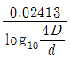
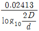
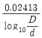
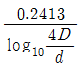
(정답률: 36%)
30. 단상 교류회로에 3150/210V의 승압기를 80kW, 역률 0.8인 부하에 접속하여 전압을 상승시키는 경우 약몇 [kVA]의 승압기를 사용하여야 적당한가? (단, 전원전압은 2900V 이다.)
- 3.6[kVA]
- 5.5[kVA]
- 6.8[kVA]
- 10[kVA]
(정답률: 29%)
31. 차단기의 정격차단 시간의 표준이 아닌 것은?
- 3Hz
- 5Hz
- 8Hz
- 10Hz
(정답률: 44%)
32. 그림과 같은 열사이클의 명칭은?
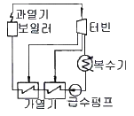
- 랭킨사이클
- 재생사이클
- 재열사이클
- 재생재열사이클
(정답률: 38%)
33. 전선의 손실계수 H와 부하율 F와의 관계는?
- 0 ≤ F2 ≤ H ≤ F ≤ 1
- 0 ≤ H2 ≤ F ≤ H ≤ 1
- 0 ≤ H ≤ F2 ≤ F ≤ 1
- 0 ≤ F ≤ H2 ≤ H ≤ 1
(정답률: 40%)
34. 저항 10[Ω], 리액턴스 15[Ω]인 3상 송전선로가 있다. 수전단 전압 60[kV], 부하역률 0.8[lag], 전류100[A]라 할 때 송전단 전압은?
- 약 33[kV]
- 약 42[kV]
- 약 58[kV]
- 약 63[kV]
(정답률: 32%)
35. 다음 설명 중 옳지 않은 것은?
- 직류송전에서는 무효전력을 보낼 수 없다.
- 선로의 정상 및 역상임피던스는 같다.
- 계통을 연계하면 통신선에 대한 유도장해가 감소된다.
- 장간애자는 2련 또는 3련으로 사용할 수 있다.
(정답률: 24%)
36. 발전소 원동기로 이용되는 가스터빈의 특징을 증기터빈과 내연기관에 비교하였을 때 옳은 것은?
- 평균효율이 증기터빈에 비하여 대단히 낮다.
- 기동시간이 짧고 조작이 간단하므로 첨두부하 발전에 적당하다.
- 냉각수가 비교적 많이 든다.
- 설비가 복잡하며, 건설비 및 유지비가 많고 보수가 어렵다.
(정답률: 40%)
37. 연가를 하는 주된 목적으로 옳은 것은?
- 선로정수의 평형
- 유도뢰의 방지
- 계전기의 확실한 동작의 확보
- 전선의 절약
(정답률: 44%)
38. 저수지의 이용 수심이 클 때 사용하면 유리한 조압수조는?
- 차동조압수조
- 단동조압수조
- 수실조압수조
- 제수공조압수조
(정답률: 31%)
39. 3상3선식 선로에서 각 선의 대지정전용량이 Cs[F], 선간 정전용량이 Cm [F]일 때, 1선의 작용정전용량은 몇 [F]인가?
- 2Cs+Cm
- Cs+2Cm
- 3Cs+Cm
- Cs+3Cm
(정답률: 46%)
40. 선로의 커패시턴스와 무관한 것은?
- 중성점 잔류전압
- 발전기 자기여자현상
- 개폐서지
- 전자유도
(정답률: 39%)
3과목: 전기기기
41. 유도 전동기의 회전력 발생 요소 중 제곱에 비례하는 요소는?
- 슬립
- 2차 권선저항
- 2차 임피던스
- 2차 기전력
(정답률: 38%)
42. 직류분권 발전기의 무부하 포화곡선이
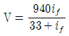
이고, if는 계자전류[A], V는 무부하 전압[V]으로 주어질 때 계자 회로의 저항이 20[Ω]이면 몇 [V]의 전압이 유기되는가?- 140
- 160
- 280
- 300
(정답률: 35%)
43. 동기 전동기의 자기동법에서 계자권선을 단락하는 이유는?
- 고전압이 유도된다.
- 전기자 반작용을 방지한다.
- 기동권선으로 이용한다.
- 기동이 쉽다.
(정답률: 27%)
44. 단상 전파 정류 회로에서 교류 전압 v=628sin315t[V], 부하 저항 20[Ω]일 때 직류측 전압의 평균값[V]은?
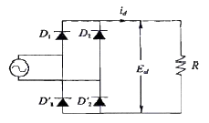
- 약 200
- 약 400
- 약 600
- 약 800
(정답률: 42%)
45. 3상 유도전동기의 특성 중 비례추이를 할 수 없는 것은?
- 동기속도
- 2차전류
- 1차전류
- 역률
(정답률: 22%)
46. 직류기에서 양호한 정류를 얻는 조건이 아닌 것은?
- 정류 주기를 크게 한다.
- 전기자 코일의 인덕턴스를 작게 한다.
- 평균 리액턴스 저압을 브러시 접촉면 전압 강하보다 크게 한다.
- 브러시의 접촉 저항을 크게 한다.
(정답률: 45%)
47. 직류발전기의 정류시간에 비례하는 요소를 바르게 나타낸 것은 ? (단, b : 브러시의 두께[mm], δ : 정류자편사이의 두께[m], vc : 정류자의 주변속도이다.)
- vc - δ
- b - δ
- δ - b
- b + δ
(정답률: 35%)
48. 직류 분권 전동기 운전 중 계자 권선의 저항이 증가할 때 회전속도는?
- 일정하다.
- 감소한다.
- 증가한다.
- 관계없다.
(정답률: 24%)
49. △결선 변압기의 한 대가 고장으로 제거되어 V결선으로 공급할 때 공급할 수 있는 전력은 고장 전 전력에 대하여 몇 [%]인가?
- 57.7
- 66.7
- 75.0
- 86.6
(정답률: 41%)
50. 부흐홀쯔 계전기는 주로 어느 기기를 보호하는 데 사용하는가?
- 변압기
- 발전기
- 동기전동기
- 회전변류기
(정답률: 41%)
51. 다음 중 변압기의 절연내력 시험법이 아닌 것은?
- 단락시험
- 가압시험
- 오일의 절연파괴전압시험
- 충격전압시험
(정답률: 28%)
52. 22[kW] 3상 유도전동기 1대를 운전하기 위해서 2대의 단상변압기를 사용한다. 이 변압기의 용량은? (단, 피상효율은 0.75 이다.)
- 29.3[kVA]
- 16.9[kVA]
- 12.4[kVA]
- 9.78[kVA]
(정답률: 35%)
53. 전기자 반작용이 직류발전기에 영향을 주는 것을 설명한 것으로 틀린 것은?
- 전기자 중성축을 이동시킨다.
- 자속을 감소시켜 부하시 전압강하의 원인이 된다.
- 정류자 편간전압이 불균일하게 되어 섬락의 원인이 된다.
- 전류의 파형은 찌그러지나, 출력에는 변화가 없다.
(정답률: 42%)
54. 3150/210[V] 5[kVA]의 단상변압기가 있다. 2차를 개방하고 정격 1차 전압을 가할 때의 입력은 60[W], 2차를 단락하고 여기에 정격 1차 전류가 흐르도록 1차측에 저전압을 가했을 때의 입력은 120[W] 이었다. 역률 100[%]에서의 전부하 효율[%]은?
- 약 96.5
- 약 95.5
- 약 86.5
- 약 70.7
(정답률: 31%)
55. 200[kVA]의 단상 변압기가 있다. 철손이 1.6[kW]이고, 전부하 동손이 2.4[kW]이다. 변압기의 역률이 0.8 일 때 전부하시의 효율 [%]은 약 얼마인가?
- 96.6
- 97.6
- 98.6
- 99.6
(정답률: 31%)
56. 동기 발전기의 전기자 권선을 분포권으로 하는 이유는 다음 중 어느 것인가?
- 권선의 누설 리액턴스가 증가한다.
- 분포권은 집중권에 비하여 합성 유기기전력이 증가한다.
- 기전력의 고조파가 감소하여 파형이 좋아진다.
- 난조를 방지한다.
(정답률: 41%)
57. 병렬 운전을 하고 있는 2대의 3상 동기 발전기 사이에 무효 순환 전류가 흐르는 경우는?
- 여자 전류의 변화
- 부하의 증가
- 부하의 감소
- 원동기의 출력변화
(정답률: 31%)
58. 동기 전동기의 공급 전압, 주파수 및 부하를 일정하게 유지하고 여자 전류만을 변화시키면?
- 출력이 변화한다.
- 토크가 변화한다.
- 각속도가 변화한다.
- 부하각이 변화한다.
(정답률: 23%)
59. 50[Hz] 12극의 3상 유도 전동기가 정격 전압으로 정격출력 10[HP]를 발생하며 회전하고 있다. 이때의 회전수는 약 몇 [rpm]인가? (단, 회전자 동손은 350[W], 회전자 입력은 출력과 회전자 동손과의 합이다.)
- 468
- 478
- 485
- 500
(정답률: 28%)
60. 단상 반발전동기의 종류가 아닌 것은?
- 아트킨손형
- 톰슨형
- 테리형
- 유도자형
(정답률: 32%)
4과목: 회로이론
61. 상호 인덕턴스 100[mH]인 회로의 1차 코일에 3[A]의 전류가 0.3초 동안에 18[A]로 변화할 때 2차 유도 기전력[V]은?
- 5
- 6
- 7
- 8
(정답률: 29%)
62. 그림에서 절점 B의 전위[V]는?
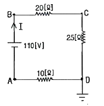
- 130
- 110
- 100
- 90
(정답률: 31%)
63. 그림과 같은 T회로에서 임피던스 정수는 각각 얼마인가?
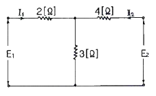
- Z11 = 5[Ω], Z21 = 3[Ω], Z22 = 7[Ω], Z12 = 3[Ω]
- Z11 = 7[Ω], Z21 = 5[Ω], Z22 = 3[Ω], Z12 = 5[Ω]
- Z11 = 3[Ω], Z21 = 7[Ω], Z22 = 3[Ω], Z12 = 5[Ω]
- Z11 = 5[Ω], Z21 = 7[Ω], Z22 = 3[Ω], Z12 = 7[Ω]
(정답률: 32%)
64. 1상의 임피던스 Zp=12+j9[Ω]인 평형 △부하에 평형 3상 전압 208[V]가 인가되어 있다. 이 회로의 피상전력[VA]은 약 얼마인가?
- 8653
- 7640
- 6672
- 5340
(정답률: 25%)
65. 그림과 같은 회로에서 저항 R4에 소비되는 전력은 약 몇[W]인가?
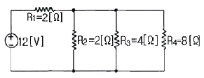
- 2.38
- 4.76
- 9.52
- 29.2
(정답률: 26%)
66. 교류회로에서 역률이란 무엇인가?
- 전압과 전류의 위상차의 정현
- 전압과 전류의 위상차의 여현
- 임피던스와 리액턴스의 위상차의 여현
- 임피던스와 저항의 위상차의 정현
(정답률: 40%)
67. 그림과 같은 비정현파의 실효값[V]은?
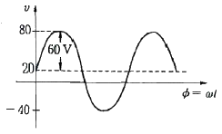
- 46.90
- 51.61
- 59.04
- 80
(정답률: 31%)
68. 그림과 같은 파형의 파고율은 얼마인가?
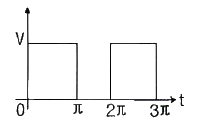
- 1
- 1.414
- 1.732
- 2.449
(정답률: 32%)
69. 대칭 좌표법에 관한 설명 중 잘못된 것은?
- 대칭 좌표법은 일반적인 비대칭 3상 교류회로의 계산에도 이용된다.
- 대칭 3상 전압의 영상분과 역상분은 0이고, 정상분만 남는다.
- 비대칭 3상 교류회로는 영상분, 역상분, 및 정상분의 3성분으로 해석한다.
- 비대칭 3상 회로의 접지식 회로에는 영상분이 존재하지 않는다.
(정답률: 37%)
70. 회로에서 a,b간의 합성 인덕턴스 L0[H]의 값은? (단, M[H]은 L1, L2 코일사이의 상호 인덕턴스이다.)
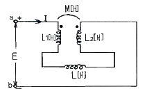
- L1+L2+L
- L1+L2-2M+L
- L1+L2+2M+L
- L1+L2-M+L
(정답률: 39%)
71. 그림과 같이 단상 전력계법을 이용하여 스위치를 P1에 연결하여 측정하였더니 300[W]이고, 스위치를 P2에 연결하여 측정하였더니 600[W]이었다. 이 3상 부하의 역률은?
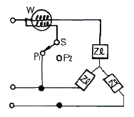
- 0.577
- 0.637
- 0.707
- 0.866
(정답률: 31%)
72. f(t)=u(t-a)-u(t-b)식으로 표시되는 4각파의 라플라스변환은?
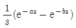
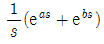
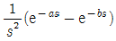
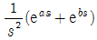
(정답률: 32%)
73. 자계 코일의 권수 N=1000, 코일의 내부저항 R[Ω]으로 전류 I=10[A]를 통했을 때의 자속 ø=2×10-2[Wb]이다. 이때 이 회로의 시정수가 0.1[s]라면 저항 R은 몇 [Ω]인가?
- 0.2
- 1/20
- 2
- 20
(정답률: 27%)
74. 한 상의 직렬임피던스가 R=6[Ω], XL=8[Ω]인 △결선 평형 부하가 있다. 여기에 선간전압 100[V]인 대칭 3상 교류전압을 가하면 선전류는 몇 [A]인가?
- 10√3 / 3
- 3√3
- 10
- 10√3
(정답률: 43%)
75. 그림과 같이 L형 회로의 영상 임피던스 Z02를 구하면?
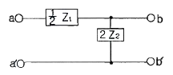
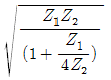
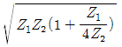
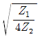
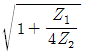
(정답률: 25%)
76. i=2t2+8t[A]로 표시되는 전류를 도선에 3[sec]동안 흘렸을 때 통과한 전 전기량은 몇[C]인가?
- 18
- 48
- 54
- 61
(정답률: 29%)
77. 20[kVA]변압기 2대로 공급할 수 있는 최대 3상전력[kVA]은?
- 20
- 17.3
- 24.64
- 34.64
(정답률: 38%)
78. 그림과 같은 R-C회로에서 입력을 ei(t)[V], 출력을 eo(t)[V]라 할 때의 전달함수는? (단, T=RC 이다)
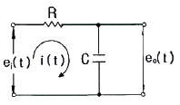
- 1 / Ts+1
- 1 / Ts+2
- 2 / Ts+3
- 1 / Ts+3
(정답률: 38%)
79. 그림과 같은 궤환 회로의 종합 전달함수는?
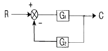
- 1/G1 + 1/G2
- G1/1-G1G2
- G1/1+G1G2
- G1G2/1+G1G2
(정답률: 42%)
80. e1=30√2sinωt[V], e2=40√2cos(ωt-π/6)[V]일 때 e1+e2 의 실효값은 몇 [V]인가?
- 50
- 70
- 10√7
- 10√37
(정답률: 19%)
5과목: 전기설비
81. 고압 옥상 전선로의 전선이 다른 시설물과 접근하거나 교차하는 경우에는 고압 옥상 전선로의 전선과 이들 사이의 이격거리는 몇 [cm] 이상이어야 하는가?
- 30
- 40
- 50
- 60
(정답률: 26%)
82. 발전기⦁변압기⦁조상기⦁계기용변성기⦁모선 또는 이를 지지하는 애자는 어떤 전류에 의하여 생기는 기계적 충격에 견디는 것이어야 하는가?
- 지상전류
- 유도전류
- 충전전류
- 단락전류
(정답률: 43%)
83. 발전소 또는 변전소에 준하는 시설에 관한 내용중 틀린 것은?
- 고압 가공전선과 금속제의 울타리, 담 등이 교차하는 경우 금속제의 울타리, 담 등에는 제1종 접지공사를 하여야 한다.
- 상용전원으로 쓰이는 축전지에는 자동차단장치를 시설하지 않아야 한다.
- 발전기 또는 변전소의 특별고압 전로에는 보기 쉬운 곳에 상별 표시를 하여야 한다.
- 사용전압이 100kV 이상의 변압기를 설치하는 곳에는 절연유 유출 방지설비를 하여야 한다.
(정답률: 35%)
84. 최대사용전압이 23000V인 중성점 비접지식 전로의 절연내력 시험전압은 몇 [V] 인가?
- 16560
- 21160
- 25300
- 28750
(정답률: 31%)
85. 접지공사에서 접지선을 지하 0.75m에서 지표상 2m까지의 부분을 보호하기 위한 보호물로 적합한 것은?
- 합성수지관
- 후강전선관
- 케이블 트레이
- 케이블 덕트
(정답률: 37%)
86. 방직공장의 구내 도로에 220V 조명등용 가공전선로를 시설하고자 한다. 전선로의 경간은 몇 [m] 이하이어야 하는가?
- 20
- 30
- 40
- 50
(정답률: 40%)
87. 아파트 세대 욕실에 “비데용 콘센트”를 시설하고자 한다. 다음의 시설방법 중 적당하지 않는 것은?
- 콘센트를 시설하는 경우에는 인체감전보호용 누전차단기로 보호된 전로에 접속할 것
- 습기가 많은 곳에 시설하는 배선기구는 방습장치를 시설할 것
- 저압용 콘센트는 접지극이 없는 것을 사용할 것
- 충전 부분이 노출되지 않을 것
(정답률: 47%)
88. 고압 가공전선이 안테나와 접근상태로 시설되는 경우, 가공전선과 안테나와의 이격거리는 고압 가공전선으로 사용되는 전선이 케이블이 아니라면 몇 [cm] 이상으로 이격시켜야 하는가?
- 60
- 80
- 100
- 120
(정답률: 35%)
89. 저압 옥내배선의 사용 전압이 220V인 출⦁퇴 표시등 회로를 금속관 공사에 의하여 시공하였다. 여기에 사용되는 배선은 지름 몇 [mm2]이상의 연동선을 사용하여야 하는가?
- 1.5
- 2.0
- 5.0
- 5.5
(정답률: 26%)
90. 관⦁암거 기타 지중전선을 놓은 방호장치의 금속제 부분 및 지중전선의 피복으로 사용하는 금속체에는 제 몇 종 접지공사를 하여야 하는가? (단, 금속제 부분에는 케이블을 지지하는 금구류를 제외한다.)
- 제1종 접지공사
- 제2종 접지공사
- 제3종 접지공사
- 특별 제3종 접지공사
(정답률: 45%)
91. 저압 옥내배선을 금속관 공사에 의하여 시설하는 경우에 대한 설명 중 옳은 것은?
- 전선에 옥외용 비닐 절연 전선을 사용하여야 한다.
- 전선은 굵기에 관계없이 연선을 사용하여야 한다.
- 콘크리트에 매설하는 금속관의 두께는 1.2mm 이상이어야 한다.
- 옥내 배선의 사용 전압이 교류 600V 이하인 경우 관에는 제3종 접지 공사를 하여야 한다.
(정답률: 43%)
92. 동일 지지물에 저압가공전선(다중접지된 중성선은 제외)과 고압가공전선을 시설하는 경우 저압 가공전선은?
- 고압 가공전선의 위로 하고 동일 완금류에 시설
- 고압 가공전선과 나란하게 하고 동일 완금류에 시설
- 고압 가공전선의 아래로 하고 별개의 완금류에 시설
- 고압 가공전선과 나란하게 하고 별개의 완금류에 시설
(정답률: 45%)
93. 가공 전선로의 지지물에 시설하는 지선의 설치기준으로 옳은 것은?
- 지선의 안전율은 1.2 이상일 것
- 연선을 사용할 경우에는 소선 3가닥 이상의 연선일 것
- 소선은 지름 1.2mm 이상인 금속선일 것
- 허용 인장하중의 최저는 2.15kN으로 할 것
(정답률: 43%)
94. 345kV 변전소의 충전 부분에서 5.98m 거리에 울타리를 설치할 경우 울타리 최소 높이는 몇 [m]인가?
- 2.1
- 2.3
- 2.5
- 2.7
(정답률: 38%)
95. 허용전류 60A인 옥내저압간선에 간선 보호용 과 전류차단기가 시설되어 있다. 이 과전류차단기에 전동기 부하를 접속할 때 최대 몇 [A]까지 접속이 가능한가?
- 120
- 150
- 180
- 200
(정답률: 26%)
96. 전기부식방지를 위한 귀선의 시설방법에 해당되지 않는 것은?
- 귀선은 부극성으로 할 것
- 이음매 하나의 저항은 그 궤조의 길이 5m 저항에 상당하는 값 이하인 것
- 특수한 곳을 제외하고 궤도는 길이 30m 이상이 되도록 연속하여 용접할 것
- 용접용 본드는 단면적 22mm2이상, 길이 60cm 이상의 연동 연선일 것
(정답률: 25%)
97. 특고압 가공전선로의 지지물로서 직선형의 철탑을 연속하여 사용하는 부분에는 몇 기 이하마다 내장 애자장치가 되어있는 철탑 또는 이와 동등 이상의 강도를 가지는 철탑 1기를 시설하여야 하는가?
- 5
- 10
- 15
- 20
(정답률: 43%)
98. 내부깊이 150mm 이하의 사다리형 케이블 트레이안에 다심 제어용 케이블만을 넣는 경우 혹은 이들 케이블을 함께 넣는 경우에는 모든 케이블의 단면적의 합계는 케이블트레이의 내부 단면적의 몇 % 이하로 하여야 하는가?
- 30
- 40
- 50
- 60
(정답률: 34%)
99. 사용전압이 170kV을 초과하는 특고압 가공전선로를 시가지에 시설하는 경우 전선의 단면적은 몇 [mm2]이상의 강심알루미늄 또는 이와 동등 이상의 인장강도 및 내 아크 성능을 가지는 연선을 사용하여야 하는가?
- 22
- 55
- 150
- 240
(정답률: 13%)
100. 고⦁저압의 혼촉에 의한 위험을 방지하기 위하여 저압측 중성점에 제2종 접지공사를 변압기의 시설장소 마다 시행하여야 한다. 그러나 토지의 상황에 따라 규정의 접지저항 값을 얻기 어려운 경우에는 변압기의 시설장소로부터 몇 [m]까지 떼어서 시설할 수 있는가?
- 75
- 100
- 200
- 300
(정답률: 19%)